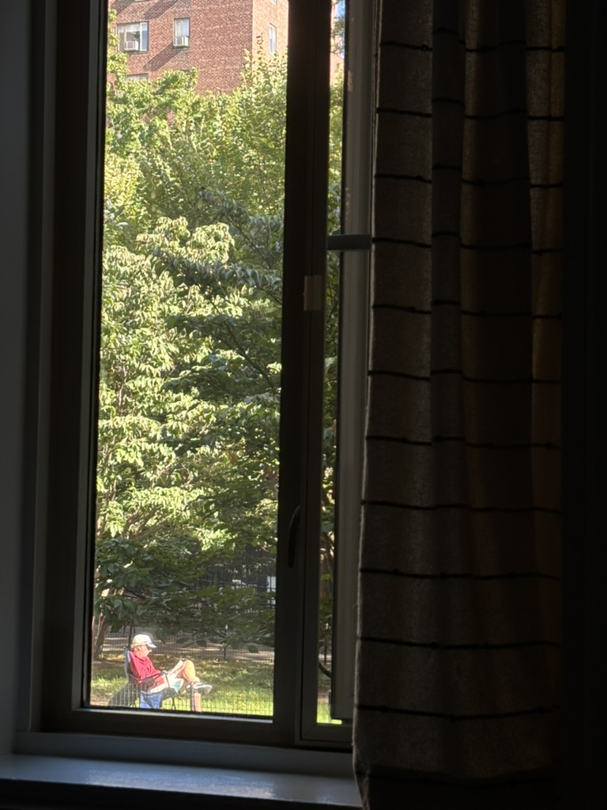

26 October 2024
因為拉扯大，所以成日都有種魂不守舍嘅感覺。每一日都覺得應該有好多事情要完成，但每日都只肯花時間去做啲皮毛task，明明都唔係對未來無諗法，但總係下唔定決心去實行。然後每晚瞓覺前都會突然覺得自己好似仲未夠努力，覺得自己虛度緊光陰。
其實呢種感覺日日都有，但理性啲睇呢個都係我決定要保護自己能量體嘅結果嚟。為咗保護能量體，所以暫時喺出街同社交方面比較無咁積極。三維啲睇咁做嘅代價係會少啲發展機會，對於要努力留喺美國嘅我嚟講，呢個階段做毒撚的確係會輸蝕啲。
另一個代價就係比較，成日見到啲同學好似個個身光頸靚咁，日日都（好似）好productive，而我就繼續站着如嘍囉。即使心裏無比清楚我同佢哋唔一樣，我都係難以逃脫朋輩壓力。
我好想俾人知其實我都唔差、我作為中西合璧嘅香港人文化同知識水平高過佢哋、想同人講「唔撚好睇唔起我呀！！！」。我最想最想就係當面大大聲屌佢哋假大愛、真極權，好想challenge佢哋點解睇嚟睇去都係睇小說，好想問佢哋點解會淨係想返一世工？
我成日都努力想諗遠啲，想諗下有啲咩我係可以長遠地貢獻人類文明，想知我能力嘅極限喺邊...矛盾地人好多時都係睇三維成就，而家成日都覺得自己好incompetent，會忍唔住同人比較，想玩內卷嘅遊戲...